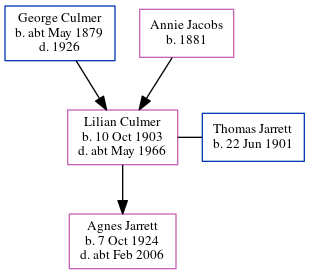

Thomas William Victor Jarrett 1901 -
[ Home ] | [ Calendar ] | [ Surnames Index ] | [ Errors ] | [ Family History ]Thomas Jarrett, the husband of Lilian Agnes Culmer (the third cousin once-removed on the mother's side of Nigel Horne), was born in Faversham, Kent, England on 22 Jun 19011,2, was baptised there on 10 Jul 1901 and also married Lilian (a farm worker fruit packing with whom he had 1 child, Agnes Kathleen L) there c. Nov 19223. On 29 Sept 1939, he was living at Sherenden Farm, Tonbridge, Kent, England1.
Children
- Agnes Kathleen L was born on 7 Oct 1924
Citations
- 1939 Register - Findmypast (was the head of the household)
- England & Wales births 1837-2006 - Findmypast
- England & Wales Marriages 1837-2005 - Findmypast
Media
England & Wales births 1837-2006 - BMD/B/1901/3/AZ/000321/343
England Births & Baptisms 1538-1975 - R_884231403
England & Wales marriages 1837-2005 - BMD/M/1922/4/AZ/000601/065
England & Wales deaths 1837-2007 - BMD/D/1970/2/AZ/000610/114
Family Tree
Map
Generated by ged2site. Last updated on Jul 3, 2024
Known Issues
Baptism information not used to determine a parent